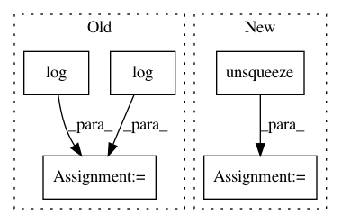

d794af8ca756cbcf7927701e0c7f85e2767b76f7,test/distributions/test_multivariate_normal.py,TestMultivariateNormal,test_log_prob,#TestMultivariateNormal#,204
Before Change
diffs = values - mean
res = MultivariateNormal(mean, DiagLazyTensor(var)).log_prob(values)
actual = -0.5 * (math.log(math.pi * 2) * 4 + var.log().sum() + (diffs / var * diffs).sum())
self.assertLess((res - actual).div(res).abs().item(), 1e-2)
mean = torch.randn(3, 4)
var = torch.randn(3, 4).abs_()
After Change
diffs = values - mean
res = MultivariateNormal(mean, DiagLazyTensor(var)).log_prob(values)
actual = TMultivariateNormal(mean, var.unsqueeze(-1) * torch.eye(4).repeat(3, 1, 1)).log_prob(values)
self.assertLess((res - actual).div(res).abs().norm(), 1e-2)
def test_kl_divergence(self):
mean0 = torch.randn(4)
In pattern: SUPERPATTERN
Frequency: 3
Non-data size: 5
Instances
Project Name: cornellius-gp/gpytorch
Commit Name: d794af8ca756cbcf7927701e0c7f85e2767b76f7
Time: 2018-10-22
Author: jrg365@cornell.edu
File Name: test/distributions/test_multivariate_normal.py
Class Name: TestMultivariateNormal
Method Name: test_log_prob
Project Name: cornellius-gp/gpytorch
Commit Name: 91b0d220c8e816766fd4565e1d2f5115d3afbefe
Time: 2018-10-12
Author: gpleiss@gmail.com
File Name: test/functions/test_inv_quad_log_det.py
Class Name: TestInvQuadLogDetBatch
Method Name: test_log_det_only
Project Name: cornellius-gp/gpytorch
Commit Name: 91b0d220c8e816766fd4565e1d2f5115d3afbefe
Time: 2018-10-12
Author: gpleiss@gmail.com
File Name: test/functions/test_inv_quad_log_det.py
Class Name: TestInvQuadLogDetBatch
Method Name: test_inv_quad_log_det_many_vectors